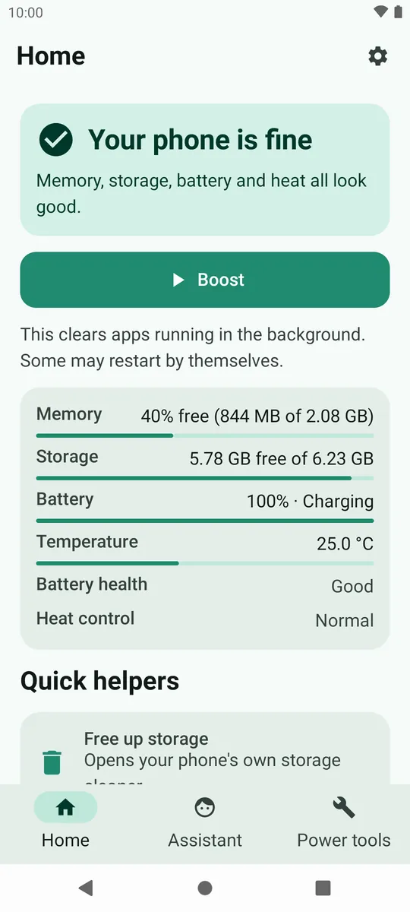
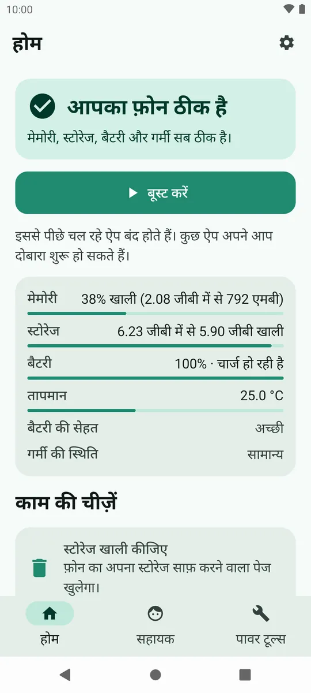
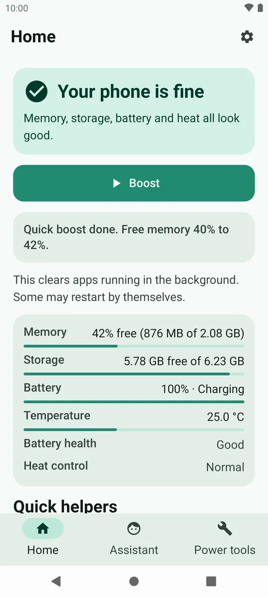
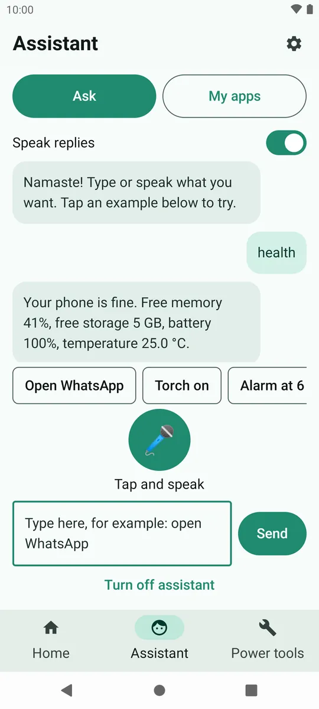
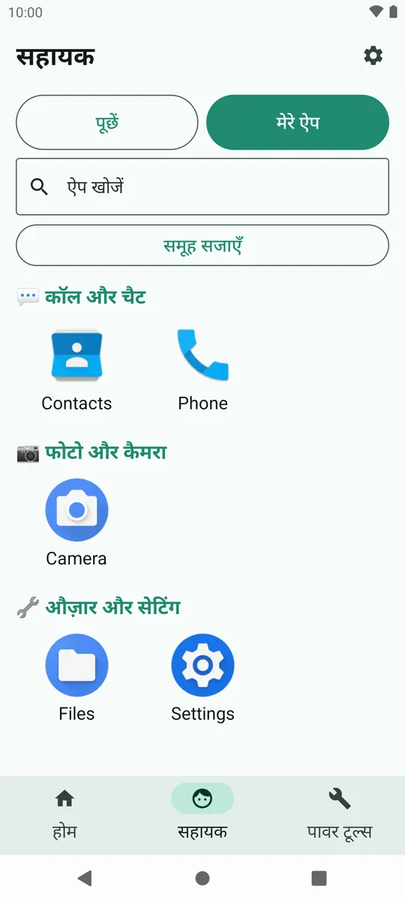
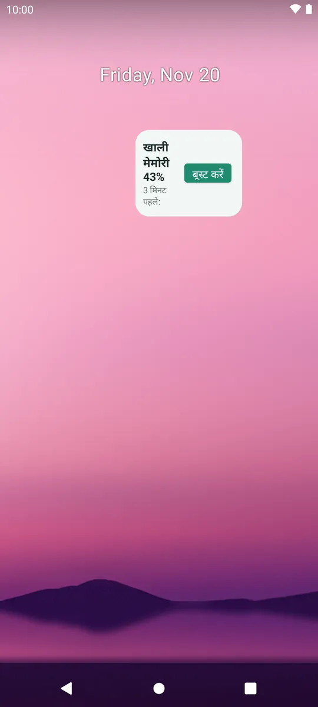
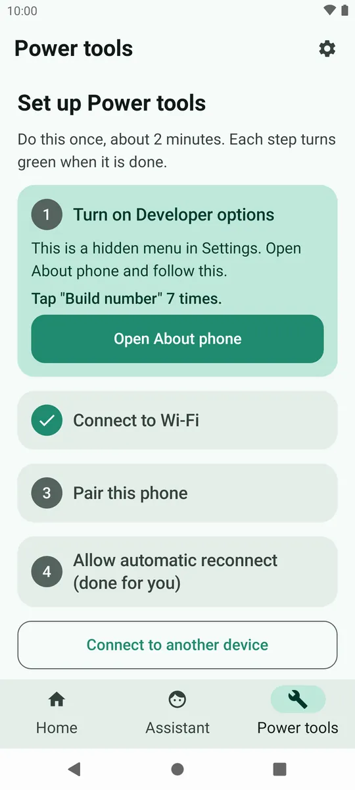
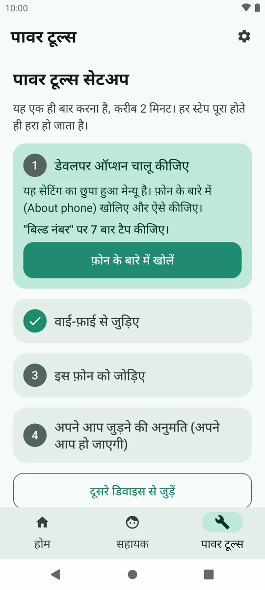

For Android phones
A faster, easier phone, without the risk.
PhoneSaar checks your phone's health, speeds it up, and gives you a simple helper that sorts your apps and does things when you ask, in हिन्दी or English. Made for the whole family, including parents and grandparents.
- Never deletes photos
- Every change undoable
- Helper works offline
The Android app works as soon as it is installed. The web app is for computers: it works over a USB cable in Chrome or Edge.

- 1
Download
One tap in Chrome, about 6.8 MB.
- 2
Install
Open it, and allow the install if the phone asks.
- 3
Pick a language, done
Choose हिन्दी or English. Health check and the helper work right away.
What it does
Everything your phone needs, in plain words.
These are screenshots of the real PhoneSaar app.
Your phone's health, in plain words
Memory, storage, battery and heat on one card, with a simple verdict and what to do next.
- Built from Android's own information, so nothing to set up.
- Shortcuts to storage, battery saver and battery usage.

Boost: lighten the load
Closes apps running in the background so the phone feels quicker. Some may restart by themselves, and PhoneSaar says so honestly.
- On Android 14 and newer, a full Boost needs the one-time Power tools setup. Until then the app tells you so instead of showing a fake result.
- Every result is what the phone really answered.

A helper that understands Hindi, Hinglish and English
Your apps sorted into simple groups. Speak or type: “WhatsApp kholo”, “subah 6 baje alarm”.
- Open apps, call (through the dialer), torch, alarm, timer, health, boost, settings pages, camera, time and date.
- Off until you turn it on. Everything stays on the phone.


Widget and Quick Settings tile
A resizable 2×1 widget shows free memory and the time of the last boost, with one Boost button. There is a Quick Settings tile that does the same.
If wireless debugging is not available, it runs a quick boost and labels it as one.

Power tools
Deep boost, battery limits, turning off pre-installed extras and fix-ups. The app walks you through the setup, step by step.
- Each step turns green only when it is really done.
- It asks before every app is turned off or a permission is changed, and each change goes into the Undo log.


Our safety promise
Your phone, your things, always safe.
Never deletes your photos or files
PhoneSaar never deletes your photos or any other files.
Never logs you out
It never logs you out of an app or account.
Asks before turning anything off
It asks before turning anything off, one app at a time.
Every change can be undone
One tap to undo, or with a script you can keep.
Important apps are locked
Phone, messages, Google, banking, WhatsApp and streaming apps can never be touched.
For the whole family
Easy enough for parents and grandparents.
- Choose हिन्दी or English the first time you open it, and change it later in Settings.
- Big buttons and plain words, no technical jargon.
- Just say what you want; typing is optional.
- Important apps are locked and every change can be undone, so there is nothing to be afraid of.
The above is only an illustration of how a request looks.
Download
Install the Android app
PhoneSaar for Android
Open this page in Chrome on your phone and tap the button. New versions install over the old one; nothing is lost.
Download PhoneSaar (about 6.8 MB)On a computer? The web app works over USB in Chrome or Edge.
Open web app- Download. On the phone, open this page in Chrome and tap the download button.
- Install. When the download finishes, tap Open. If the phone asks, allow Install unknown apps for Chrome, then go back and tap Install.
- Choose a language. Open PhoneSaar and choose हिन्दी or English. That’s it: health check, Boost and the helper work right away.
“App not installed” or “package appears to be invalid”?
The download was cut short or an older copy was opened. Delete phonesaar.apk from the Downloads folder, download it again in Chrome on a steady connection, and open the new file from Chrome’s download list.
Files forwarded through WhatsApp or Telegram can arrive broken, so download from this page instead.
The phone asks about “Install unknown apps”?
That is a normal Android question because the app does not come from the Play Store. Allow it for Chrome, go back and tap Install.
How do I update?
Download the new APK the same way. It installs over the old one and nothing is lost. Requires Android 8.0 or newer.
Optional
Power tools (optional, one-time setup)
Deep boost, battery limits and turning off pre-installed extras need Android’s Wireless debugging. PhoneSaar walks you through it inside the app; these are the same steps.
The setup steps
- Open Settings, About phone and tap Build number seven times to turn on Developer options.
- Open Developer options and turn on USB debugging. For Wi-Fi with the Android app, turn on Wireless debugging instead.
- For the Android app, tap Pair device with pairing code and type the 6-digit code into PhoneSaar.
- For the web app, plug the phone into a computer, press Connect and pick it. Close Android Studio and any other adb program first, because only one program can use the cable.
- On the phone, tap Allow when it asks about USB debugging.
OPPO, realme and OnePlus (ColorOS): a change is blocked
In Developer options, turn on Disable permission monitoring, then reconnect.
Xiaomi, Redmi and POCO (MIUI): a change is blocked
In Developer options, turn on USB debugging (Security settings). It needs a Mi account and a SIM.
PhoneSaar always shows what the phone really answered. A blocked change is shown as blocked, never as done.
FAQ
Questions people ask
Is it safe?
Yes. It never deletes photos or files, never logs you out, asks before turning an app off, and keeps important apps (phone, messages, Google, banking, WhatsApp, streaming) locked. These rules are enforced in the app’s command layer, not just on screen.
Does it need internet?
The helper is fully offline and nothing is uploaded. You need internet to download the app. The Power tools setup needs the phone to be connected to Wi-Fi.
Does it need root?
No. There is no root. Features like deep boost use Android’s own wireless debugging.
Why wireless debugging?
On Android 14 and newer an app can only close its own processes, so without setup Home honestly shows a “one-time setup” card. Deep boost, battery limits and turning off extras use this official Android route, and it is optional.
Which Android versions work?
Android 8.0 and newer. Quick boost runs on Android 8 to 13; on 14 and newer a full Boost needs the Power tools setup.
How do I undo a change?
Every change is written to the Undo log. From the Undo screen you can revert one entry or all of them. The web app also lets you download the log as a .sh file.